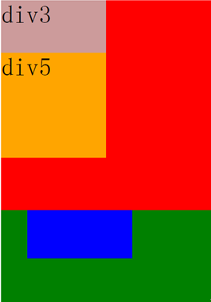

z-index堆叠顺序
问题：
设置相对或绝对定位时，可以设置z-index来确定堆叠顺序。 那么堆叠顺序如何确定呢？下面div<1-5>的堆叠顺序如何？ 如下图
1.div1-5 的z-index全部设置为 z-index:0 时,div4 > div2 > div5 > div3 > div1 （子元素覆盖父元素，后面的元素覆盖前面的元素）
2.将div3 z-index:1，其他均为0; div4 > div2> div3>div5 > div1.

3.将div1 z-index:1，其他均为0; div5 > div3 > div1 > div4 > div2.
4.将div1 z-index:1,div4 z-index:5，其他均为0; 同第3种情况
总结：
（1）对于同级元素，默认(或position:static)情况下文档流后面的元素会覆盖前面的。
（2）同一个父元素包裹的子元素比较z-index才有意义。不同父元素包裹下的子元素之间的z-index服从从父规则。
（3）IE6/7下position不为static，且z-index不存在时z-index为0，除此之外的浏览器z-index为auto。
（4）z-index为auto的元素不参与层级关系的比较，由向上遍历至此且z-index不为auto的元素来参与比较。